前言
其实这是『请问您今天要来点兔子吗？BLOOM』（以下简称『点兔BLOOM』）简评的重制版。我又双推了重写的。
本来是有每一集的抠细节+对比漫画。后来想了想，这也没什么意义，还是想说啥就说啥吧。所以这更像是一篇杂谈吧。
我之前写的评价总是太客观，个人情感太少。我想尝试写一次主观的观后感，但是客观的评价不能少。
然后我的主观抒情都写到b站长评里了，所以这还是篇客观的评价红红火火恍恍惚惚
漫画索引
番剧每一话对应的漫画话数。反正都整理了，干脆写上来吧。
漫画标题（应该）是萌萌路汉化组的翻译。
| 动漫 | 漫画 |
|---|---|
| 第1话 | 57话『夏日制服制作大作战』 63话『杂货中的宝物』 |
| 第2话 | 54话『怪盗兔来袭』 58话『夏日惊悚纳凉大作战』 |
| 第3话 | 65话『文化祭的战斗：前篇』 64话『大家的升学方向』 |
| 第4话 | 65话『文化祭的战斗：前篇』 66话『文化祭的战斗：后篇』 |
| 第5话 | 56话『马拉松大赛前的地狱操练』 69话『追捕青山性骚扰山？』 |
| 第6话 | 67话『我们中出了个叛徒』 70话『棒棒个棒面包祭』 |
| 第7话 | 71话『Trick or Treat』 72话『万圣节的奇幻之夜』 |
| 第8话 | 68话『大家的理世老师』 73话『小豆子队与老师们』 |
| 第9话 | 75话『千夜是学生会长候补！？』 81话『萝丝酱再临』 |
| 第10话 | 76话『神秘的圣诞老人』 77话『圣诞前夕·兔之屋危机？』 |
| 第11话 | 78话『圣诞前夕·支援到来』 79话『平安夜·礼物交换』 |
| 第12话 | 80话『温暖烘培屋』 84话『点兔市第一次王冠战争』 |
总评
情节&主题
作画
其他
511の细节
受我以前写的一篇题解猛男必刷——「みずしろごちうさクイズ」14题题解的启发，我打算找一找『点兔BLOOM』里的细节。虽然这很无聊
慢慢更新，目前只抠到第四话。
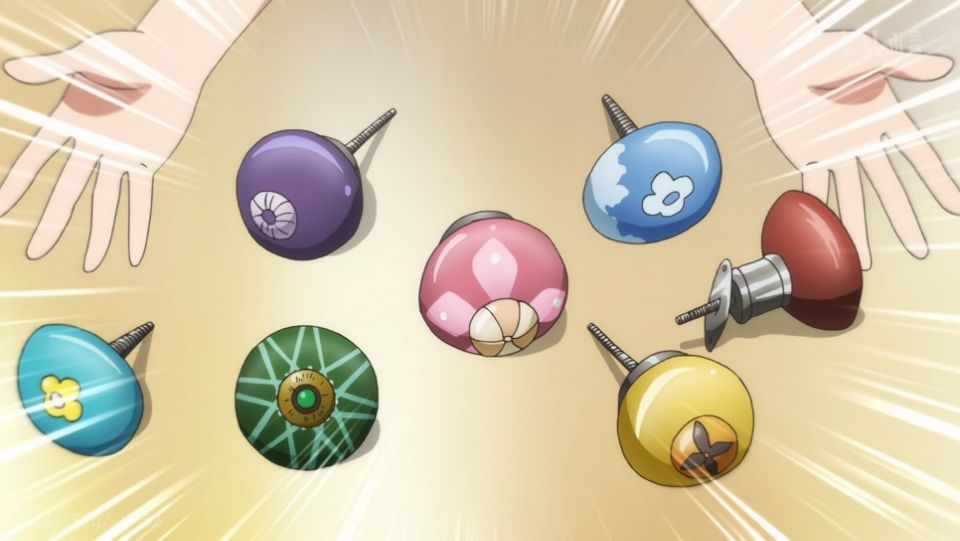
第一话心爱买的门把手，七种颜色的门把手正好代表了七个人。
- 怪盗lapin名字的由来：lapin在法语中是兔子的意思，同时与lapin的原型lupin（法国作家莫里斯·卢布朗创作）谐音
关于第二话心爱放错的录像带：
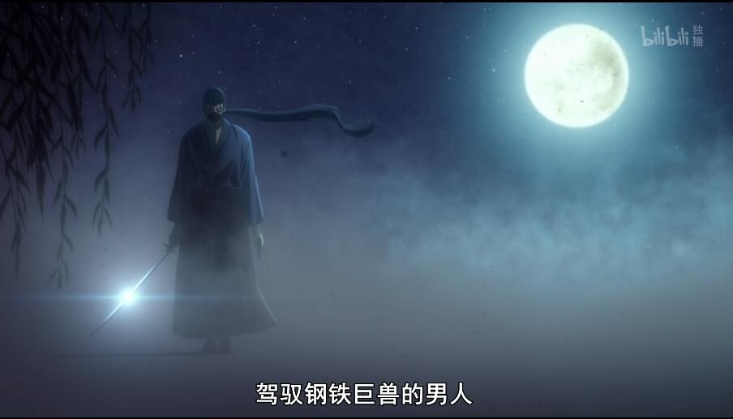
我尝试找其出处，怀疑和『鲁邦三世』（讲的是怪盗lupin之孙的故事）有关，但我没有看过，不能确定。
电视上怪盗lapin的CAST，其实就是点兔的CAST。可以依稀辨认出来几个：
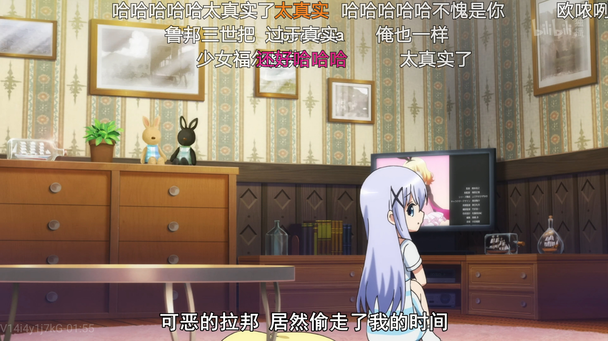
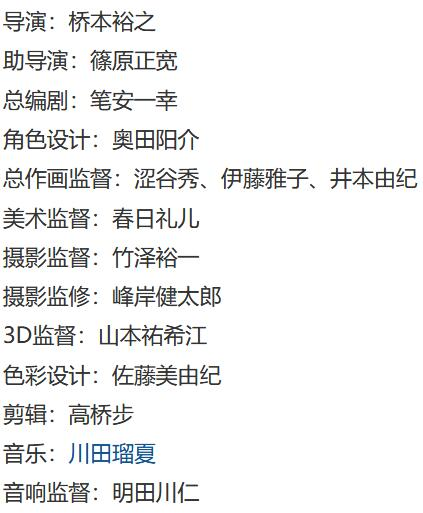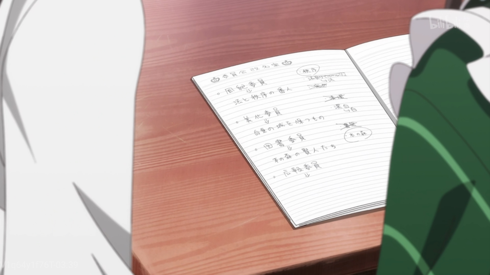
第三话笔记本上的千夜传统艺能，其实是出自漫画75话：
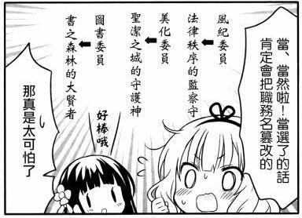
不过这两话其实没啥关系，75话讲的是千夜竞选学生会长。
麻耶邀请智乃上同一所学校的时候：
麻耶：小豆队 三人一起说贵安吧
麻耶：贵安
惠：贵安
智乃：你们两个都贵安症候群了智乃没有说贵安，暗示了三人最终的去处。
不过漫画里智乃直接拒绝了，理由也很现实：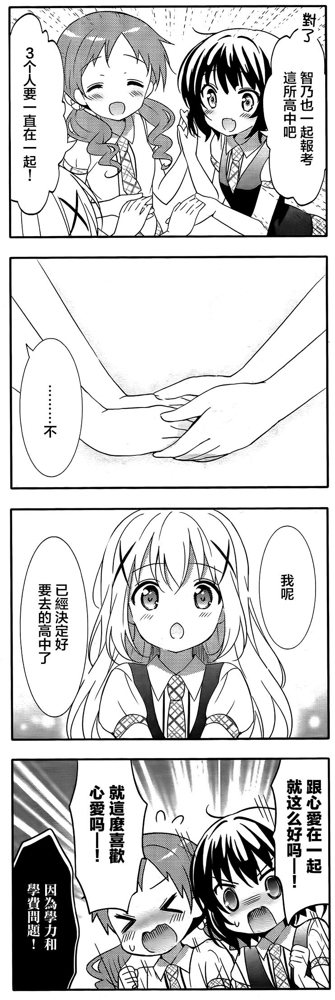
所以动画将智乃决定志愿的世界延后了，虽然也很容易猜出来应该是和心爱一起的。
阅读理解
BLOOM的含义
第三季的标题没有像第二季一样再加一个问号。当然这样也不合适，不然若干年后，点兔就叫「请问你今天要来点兔子吗??????????」，我都怀疑这是不是日常番了。
第三季名为BLOOM。BLOOM原意是开花，这里应该是象征着成长。智乃的改变、小豆队初中毕业、理世高中毕业、旅行，这都是成长的标志。事实上，成长也是整个点兔的主题。
另外，BLOOM还有一个引申义：青春。虽然点兔没有刻意强调过青春这一主题，但任何描绘中学生日常的作品，一定会展现青春。只是不像那种热血激情的青春，点兔的青春是温馨治愈的。正如大部分人的青春，在平静的日常中慢慢成长。
ed解析
主题很明显是爱丽丝梦游仙境。不过服饰是来源于单行本第3卷给Melonbooks的插画：
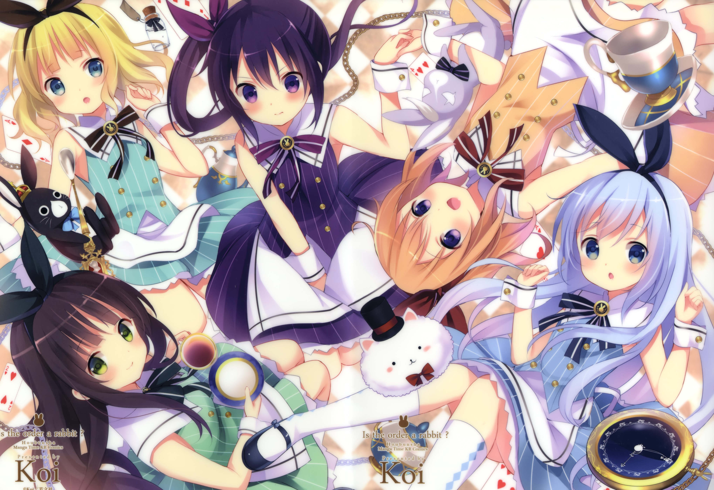
没见过麻耶和惠的类似插画，大概是基于此原创的。
整个ed是根据智乃的经历制作的。
智乃困在瓶子中，提比想要打开瓶子，没有成功。
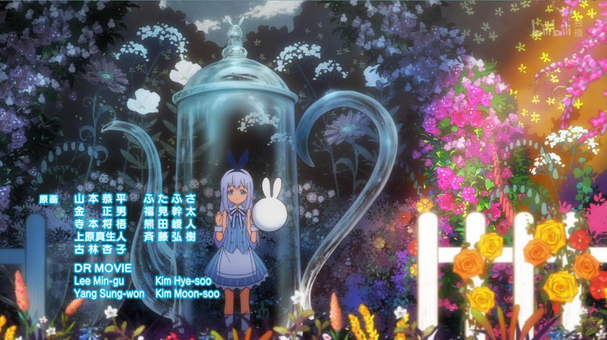
——智乃母亲去世后封闭自我、沉默寡言。而爷爷后来也去世了，担心智乃孤独附身于提比陪伴智乃。但是智乃一直没有敞开内心。
结伴而行的麻耶和惠发现了智乃，把她从瓶子里救了出来。
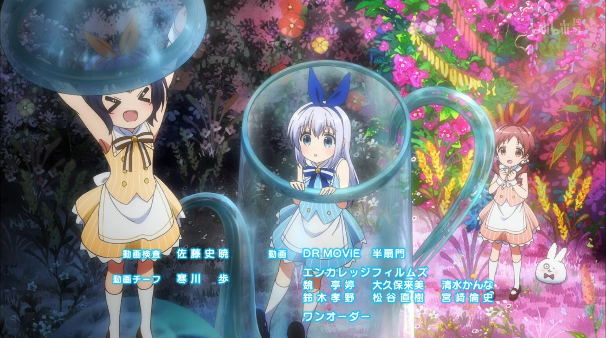
——麻耶和惠本来是青梅竹马，初中入学时发现了不善言语的智乃，主动与她交朋友。
小豆队一同在绚丽的星空下奔跑。这里智乃的表情没有完全舒展，带有一点惊讶.
——小豆队度过了快乐的初中时光。不过智乃依然是被动与人交往。
小豆队的特写。这里智乃的表情是舒展了的。
——这段应该是初中即将结束。期间心爱的参与，让智乃慢慢改变，走出了内心的阴霾。
小豆队停下脚步，望向星空的尽头。智乃回过神时，麻耶和惠却已消失不见。
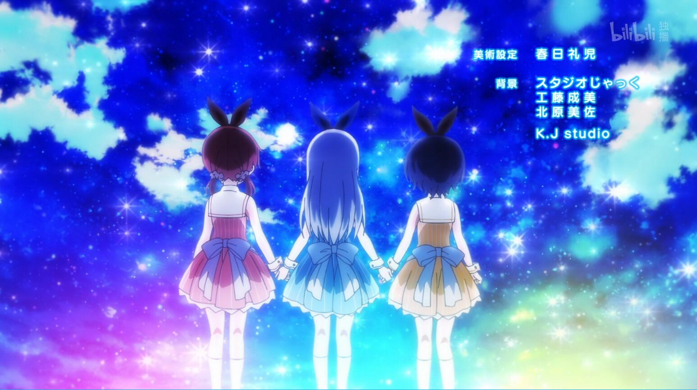
——初中毕业，麻耶和惠与智乃去往不同的高中。
一滴咖啡滴下，麻耶和惠还在，智乃眼角带泪，跑到麻耶和惠身边。
——滴下咖啡一般是指从回忆回到现实（例如剧场版智乃回忆与理世刚开始的相处）。面对即将到来的毕业与分离，智乃心中还是有伤感与不舍吧。
相比第一季的打扑克、第二季的跳舞，第三季的ed更有深度。第一次看的时候直接泪目了。
分集细评
受我以前写的一篇题解猛男必刷——「みずしろごちうさクイズ」14题题解的影响，我特别爱抠细节，虽然也抠不出来多少
第一话
出自漫画57话『夏日制服大作战』和63话『杂货中的宝物』。
开局惊艳到我了。作画质量明显提高，特别是背景丰富了很多吗，超出了我对第三季的期待。
找不同
麻耶和惠进店的情节
动漫中麻耶和惠第一次进店就没走。动漫的情节更顺畅合理，而漫画的更有趣。
买心爱布料的部分，动漫删减了“寻人启事”一段，可惜了
- 动漫加上了具体的做衣服过程，还有智乃为睡着的两人盖被子
- 动漫将找布料和找杂货的情节合到了一起，作为过渡
- 纱路接下千夜掉下来的杯子后，千夜说的“纱路，比起我还是杯子比较重要呢”为动漫原创的
- 智乃照看走丢的孩子那段细化了很多，而且漫画中玩具是买走的，动漫是直接送了出去。改的太棒了，直接泪目了
- 魔杖伸长戳到腹部，漫画中只在结尾出现了一次，动漫则是一直在用这个梗，智乃照看孩子后面也出现了好几次
- 漫画结尾心爱的飞花魔术失败了（撞到了自己的下巴），动漫中则是成功了
细节
- 有一段过场是一个孩子模仿怪盗lapin，也是为第二话做铺垫了
-
没有「Welcome come on!」，一看就不是心爱写的（doge）
记住这个看板，后面也有类似的
第二话
出自漫画58话『夏日惊悚纳凉大作战』和54话『怪盗兔来袭』。
ed还是经典的小豆队组合，放出来的时候眼泪直接流下来了。
找不同
- 漫画的58话和54话是分开的。动漫则先给54话开了个头，然后讲完了58话，再继续讲54话。并且在开头加了一段纱路借来怪盗lapin录像带而没有电视，作为衔接。
动漫对58话进行了很大的改编，意在突出纱路的改变。
- 漫画开头：千夜来纱路家邀请她参加试胆大会被拒后，纱路出门买东西，途中偶遇麻耶和惠，两人也邀请她参加试胆大会。三人在纱路家前又遇到了千夜，麻耶和惠在谈话中知道千纱也是发小。
动漫开头：千夜在邀请纱路后两人没有离开。麻耶和惠因为千纱也是发小，来邀请她们参加试胆大会。 - 动漫中千纱握手深情对白是动漫原创情节，
- 漫画心爱没有摔倒。动漫心爱摔倒了并加上了千纱和心爱一起洗澡的情节。
- 动漫删掉了漫画结尾：
- 漫画开头：千夜来纱路家邀请她参加试胆大会被拒后，纱路出门买东西，途中偶遇麻耶和惠，两人也邀请她参加试胆大会。三人在纱路家前又遇到了千夜，麻耶和惠在谈话中知道千纱也是发小。
千夜的这个表情还是漫画的更有神：
怪盗lapin篇里，动漫加了一段怪盗lapin动画内容，删掉了通宵的情节
抠细节
第三话
出自漫画65话『文化祭的战斗：前篇』和64话『大家的升学方向』。
原本漫画的这两话就是同时发生的，只是分开写了。动漫整合到了一起，这一话先给65话开了个头，之后讲完了64话。
作画质量略有下降。
找不同
- 智乃捉弄心爱是动漫原创。这段加的妙啊，既能作为两话的衔接，又能展现出智乃腹黑的一面，体现出成长，。
- 小豆队进大小姐高中是动漫原创。漫画里直接从真手凛的演讲开始。
- 漫画里真手凛演讲时麻耶在睡觉，演讲内容比较简略。动漫里丰富了演讲内容，直接点题，麻耶也没有睡觉。
之前漫画一些画风突变的地方动漫会照搬，不过智乃和惠吐槽麻耶的贵安时动漫改得细致了：
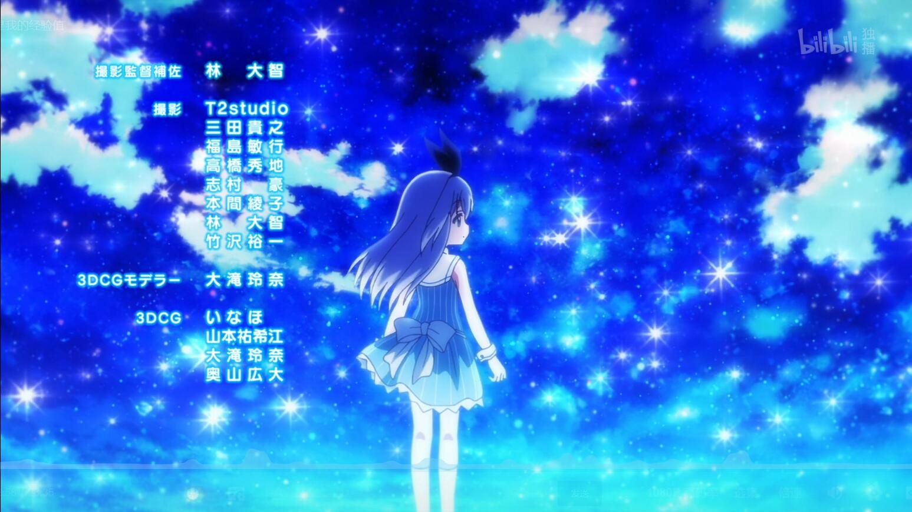各有好处吧。
- 漫画结尾麻耶和惠邀请智乃一起来大小姐高中时，智乃其实已经定好了。而动漫里智乃还未决定。
动漫更为浪漫，也能留下悬疑，符合番剧的要求。但是从现实角度看，漫画里智乃说了“因为学力和学费问题”，漫画确实更合理。
抠细节
千夜的传统艺能：改名